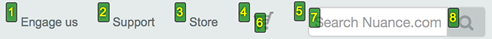

Saisie vocale
Aperçu: Saisie vocale
La saisie vocale, aussi appelée la reconnaissance vocale , traduit le langage parlé en texte et en commandes informatiques. Elle est d’une grande utilité pour les personnes qui ont du mal à utiliser leurs mains pour actionner une souris ou un clavier, notamment les personnes souffrant de légers microtraumatismes répétés, les personnes ayant une dextérité réduite ou des limitations musculaires telles que tremblements, mauvaise coordination ou paralysie, les personnes souffrant d’arthrite et les personnes à qui il manque des membres.
La saisie vocale permet aux utilisateurs de dicter du texte dans n'importe quelle application, comme Microsoft Word, les courriers électroniques, les formulaires Web, etc. Plutôt que de taper, les utilisateurs parlent dans un microphone et les mots apparaissent à l'endroit où se trouve le clavier. Lorsqu'ils naviguent sur des pages Web en utilisant la saisie vocale, les utilisateurs peuvent activer des liens et des boutons, remplir des formulaires, copier et coller du texte, faire défiler l'écran et exécuter d'autres fonctions.
Le contenu doit être correctementconçu et codé pour être contrôlé par la parole. En général, les pages qui permettent l’interaction au clavier et l’utilisation d’un lecteur d’écran sont également accessibles par saisie vocale.
Voici les difficultés que les utilisateurs peuvent rencontrer lorsqu’ils utilisent un logiciel de reconnaissance vocale sur le Web :
- Absence de contrôle par le clavier pour toutes les fonctionnalités (par exemple, un carrousel qui se déplace sans bouton de pause, un bouton personnalisé qui n'a pas d'événement clavier). Indicateurs de ciblage invisibles sur des éléments interactifs
- Ordre visuel et ordre de tabulation non concordants
- Image liée avec texte visible et texte de substitution non concordants
- Texte de lien identique à plusieurs endroits (p. ex., « Lire la suite... »), mais menant à des cibles différentes
- Lien visible ou texte du bouton manquant sur son étiquette ARIA (voir Étiquette dans le nom, ci-dessous)
- Formulaires de commande sans étiquettes associées par programmation
- Menus uniquement affichables par survol
- Cibles à cliquer de petite taille
- Commandes cliquables qui ne donnent pas l’impression de l’être
Étiquette dans le nom
Comme expliqué dans la description de Dragon Naturally Speaking ci-dessous, les utilisateurs activent les liens et les boutons en les nommant. Lorsqu'un contrôle possède un nom accessible et invisble défini par une étiquette ARIA ainsi qu'une étiquette visible, le texte de l'étiquette visible doit faire partie de l'étiquette ARIA ou y correspondre. L'étiquette ARIA a préséance sur tout texte visible. Si aucune partie de l'étiquette visible ne fait partie du nom accessible, l'utilisateur ne pourra pas cibler le contrôle par son nom.
Dragon Naturally Speaking
Naturally Speaking (Dragon) est le logiciel de saisie vocale le plus utilisé sur le marché.
Exemple de commandes Dragon
Les commandes Dragon sont nombreuses et permettent à l’utilisateur de contrôler toute l’interface informatique. Un sous-ensemble concerne l’accessibilité.
Pour déplacer la cible d’une zone sensible à la suivante, l’utilisateur dit « touche de tabulation ».
Pour activer une commande, l’utilisateur dit « Cliquer sur » suivi du nom de la commande. L’utilisateur peut accéder à l’une ou l’autre des commandes suivantes en dictant leur nom :
- Links
- Buttons
- Checkboxes
- Images (actionable)
- Radio buttons
- Text fields
- List boxes
Dragon cliquera sur le contrôle dès qu'il aura trouvé une correspondance unique, de sorte que les utilisateurs n'ont souvent pas besoin de prononcer le nom en entier.
L’utilisateur peut également numéroter toutes les commandes et choisir un numéro :
- L’utilisateur dit l’un des énoncés suivants :
- Show links or Click links
- Click button
- Click checkbox
- Click image
- Click radio button
- Click text field
- Click list box
Les numéros apparaissent à côté des commandes du type demandé.
S’il n’y en a qu’une seule, le logiciel clique directement sur elle.
- L’utilisateur dit "Choose [number]" pour choisir parmi les commandes numérotées.
D’autres commandes courantes permettent à l’utilisateur de faire défiler la page, de la recharger, de parcourir l’historique du navigateur, d’annuler le texte entré dans les champs de saisie, etc.
Damier de souris Dragon
Le damier de souris de Dragon Naturally Speaking permet à l’utilisateur de placer le pointeur de la souris sur une zone précise.
Les utilisateurs invoquent le damier de souris en disant "Mouse Grid", ce qui affiche une grille transparente de trois par trois sur l'écran, les sections étant numérotées de un à neuf.
Avec le damier de souris à l'écran, l'utilisateur prononce le numéro sur lequel il veut se concentrer. Une nouvelle grille trois par trois apparaît à cet endroit, avec le pointeur de la souris au centre.
L’utilisateur peut répéter le processus autant de fois que nécessaire. Une fois que le pointeur se trouve enfin sur la commande souhaitée, l’utilisateur dit « cliquer ».
Cette section est adaptée de l’article le damier de souris dans la documentation d’aide de Nuance Naturally Dragon Speaking.
Ressources WCAG connexes
Ressources WCAG connexes
Critères de succès
Techniques
- G208 : Inclure le texte de l’étiquette visible dans le nom accessible (en anglais)
- G211 : Faire correspondre le nom accessible avec l’étiquette visible (en anglais)